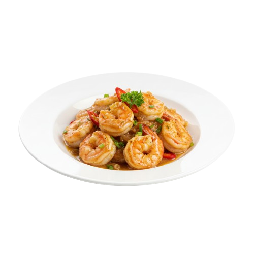
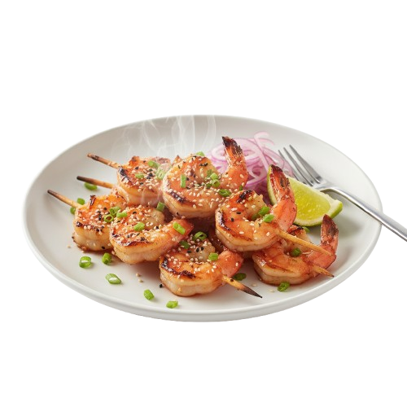
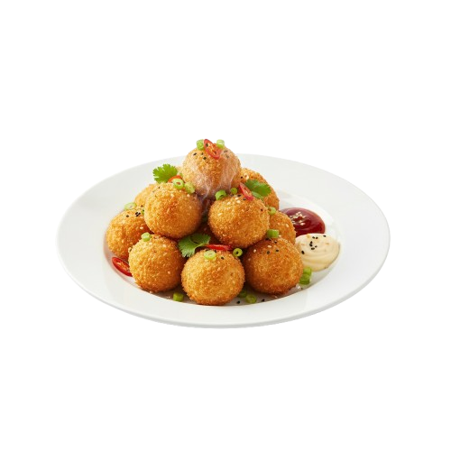
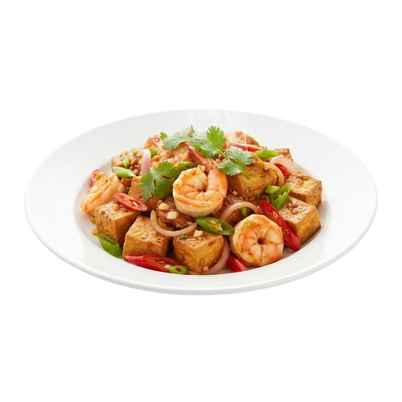
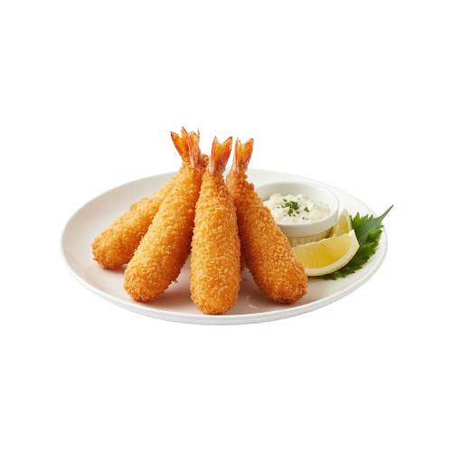
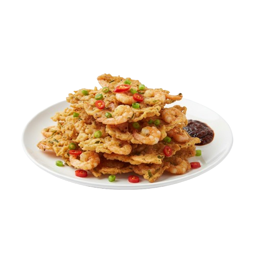

Olahan Udang

Udang Cabe Garam
gurih pedas
♡
Udang Saus Tiram
gurih manis
♡

Udang Goreng Mentega
gurih dan harum
♡

Udang Bakar Madu
manis gurih
♡

Bola Roti Udang
camilan gurih
♡

Oseng Tahu Udang
gurih pedas
♡

Ebi Furai
crispy gurih
♡

Peyek Udang
renyah gurih
♡